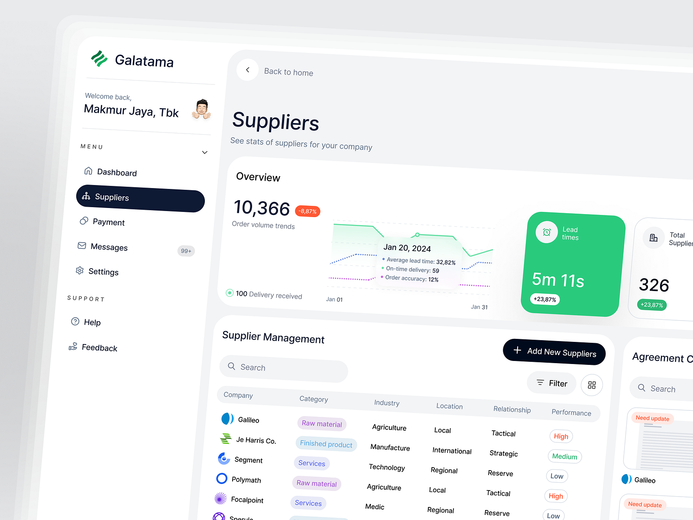

GAVYO · PILOTO VISUAL
Atual × proposta
Compras e Novo Pedido · desktop e mobile

Composição traduzida para o GAVYO
- Regiões distintas: navegação escura, área de trabalho grafite e superfície principal mais clara, sem moldura em cada campo de informação.
- Tabela dominante: cabeçalhos suaves, fornecedor reconhecível, números alinhados e status com texto, sinal e cor. Busca, filtros e ação principal perto da lista.
- Geometria contida: superfícies com raio de 14 px, controles de 8 px e ações arredondadas. A referência fornece ritmo e proporções; os tokens grafite/azul continuam sendo GAVYO.
- Novo Pedido: itens como documento editável; fornecedor antes da compra e total numa coluna lateral. O formulário é uma tradução para a tarefa, pois o shot aprovado não contém formulário de pedido.
- Mobile: lista orientada a fornecedor/situação/valor; edição de cada item em duas colunas; resumo em fluxo e atalho para alcançá-lo. Nenhuma barra sobre os campos.
Não reproduzimos marca, gráfico de tendências, contratos, pagamentos, rankings ou métricas de desempenho da referência.
Limites deste piloto
Dados demonstrativos, somente em memória. Busca, edição, validação, rascunho e confirmação são simulados. Sem API, gravação real, alteração de estoque ou novas permissões. Outros módulos da navegação são contexto visual, não telas redesenhadas. O feedback/modal próprios do arquivo isolado serão mapeados aos componentes compartilhados na implementação, após revisão.